Aquadose
Jennie Redrovan (jsr298), Rob Taylor (rpt54)
Introduction
Many individuals, particularly the elder, struggle with consistently taking their prescribed medication on time which can lead to serious health complications. This project aims to develop an automated pill and water dispensing system that provides both auditory and visual reminders to ensure timely medication intake.
Objective
Our project implemented AquaDose, an automated pill and water dispensing system built around a Raspberry Pi, PiTFT touchscreen interface, and a servo-driven 7-day pill carousel. We developed an interactive GUI that guides users through setup, allows them to schedule a daily pill time, and then automatically dispenses the correct pill while providing auditory (buzzer) and visual reminders. The system also offers optional water dispensing using a DC pump and dual HX711 load cells to detect cup presence and sufficient reservoir water, with safety checks and on-screen prompts if conditions are not met. In addition, we integrated a simple two-ball touchscreen game on the idle screen to encourage engagement and make the waiting experience more pleasant.
Video
Here is a video demonstration of our project:
Design and Testing
Pill Dispenser & Servo Control
At the start of our project, we set out to create a pill and water dispensing
system. We initially focused our
efforts
on the mechanical design and assembly of our pill dispenser; the goal was to create
a simple and effective dispenser
with as few moving parts as possible. To accomplish this, we used a hobbyist servo
to rotate a cylinder which had
separate compartments for each pill. The pill would be dispensed when the relevant
compartment was rotated to a
specific
angle. We 3D printed the parts from PLA and used hot glue to connect the servo horn
to the rotating cylinder.
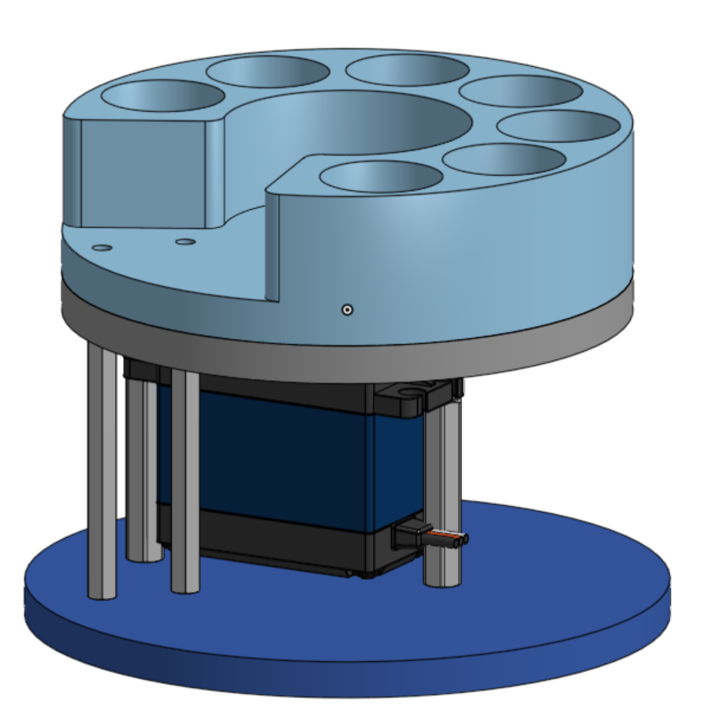
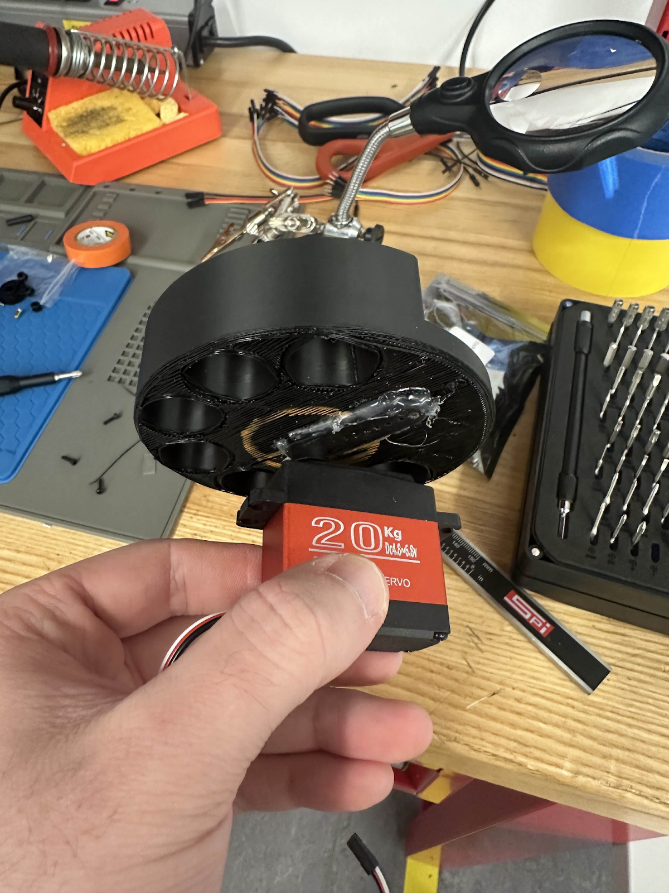
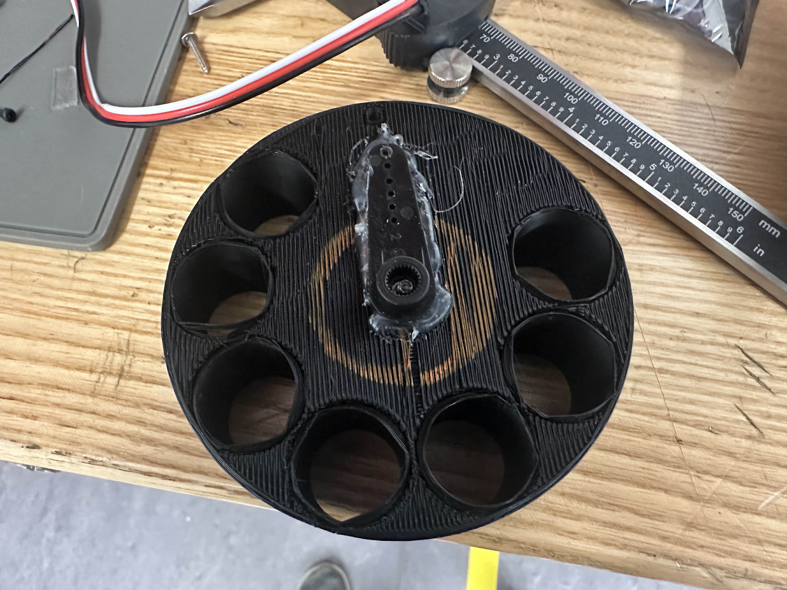
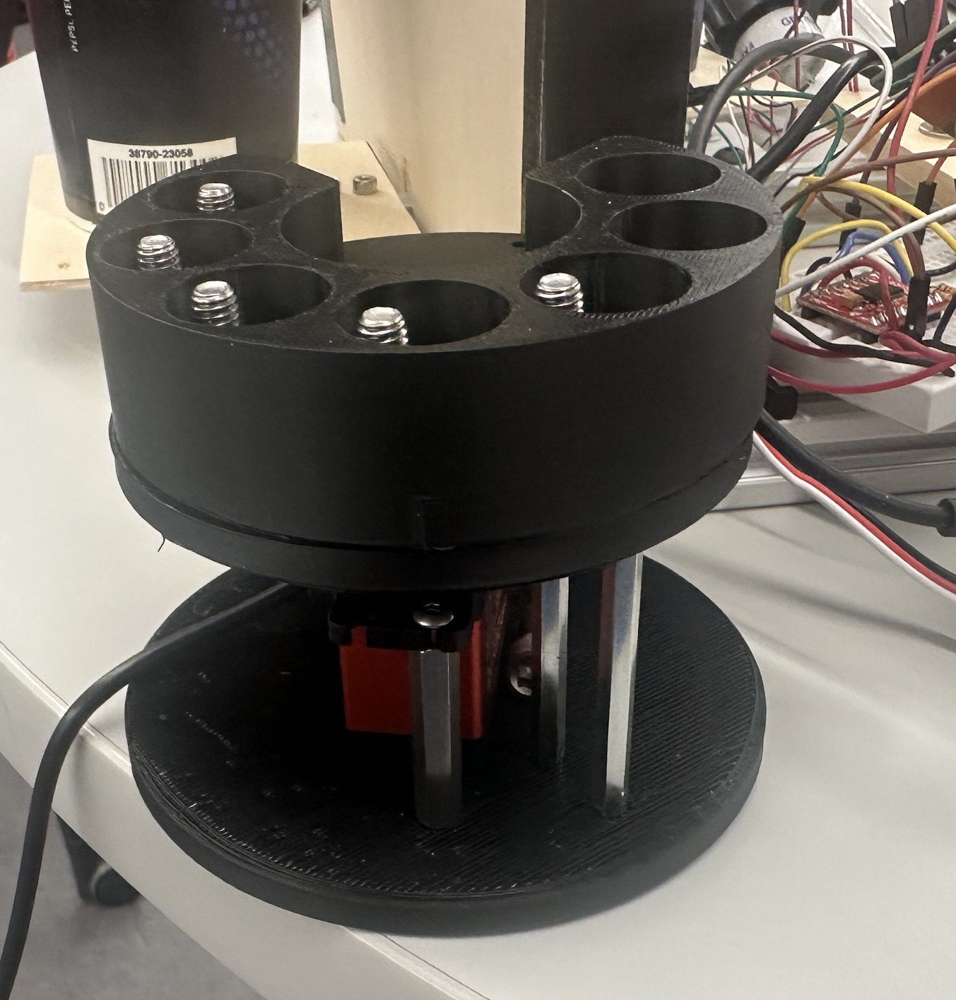
The hobbyist servo could be controlled by Pulse Width Modulation, which we planned on providing using the GPIO library's software PWM. When we connected the servo to the Pi, we quickly learned that the software PWM provided by the GPIO library was too jittery for our needs; the servo's position was inconsistent and almost impossible to control. After discussing with Dr. Ma and researching online, we learned that hardware PWM was a more reliable method for creating PWM signals. To implement hardware PWM, we switched the servo controller to the pigpio library. We continued using the GPIO library for the rest of our GPIO control, which was made easy because our servo runs as a background process. The servo is controlled using a FIFO system. On start, the main process creates a FIFO with path “./servo_cmd” (so the FIFO is named servo_cmd and is in the same folder as the main process and subprocess). The servo subprocess reads from the FIFO every 200ms, converts the information in the FIFO to a PWM signal, and commands the servo to move to that signal using the pigpio set_servo_pulsewidth(microseconds) as described in the library documentation here . We measured the relationship between the servo's PWM signal and the revealed pill chamber, created a list where the index of the list was the chamber and the value was the PWM signal, and had the FIFO contain the index of the list to read from. We also had our subprocess check that the FIFO inputs were numerical, which helped the subprocess avoid erroring out if text entered the FIFO. The subprocess would delete the FIFO when the subprocess received a 'stop' in the FIFO, which improved reliability since the subprocess would terminate itself after receiving the 'stop' in the FIFO. With these efforts we are able to reliably control the servo and release pills from specified containers, which was the goal of the system.
Load Cell Communication, Calibration, and Readings
Our project dispenses from a reservoir into a cup. Such systems usually use a proximity sensor to detect the presence of a cup or bottle, but we wanted to create a system that could measure the amount of water dispensed and remaining in the reservoir. We considered using a distance sensor to measure the height of the water, but this seemed risky since measuring distance from a transparent object is difficult. We decided to use load cells to measure the weight of water in the cup and reservoir. Loadcells are interesting because they use a wheatstone bridge to measure the change in resistance values when a strain (or stress) is applied to the system. The wheatstone bridge receives an excitation voltage (in this case 5V), and we measure the change in resistance values by measuring the small change in voltage across the resistors. The change in voltage is on the order of single digit mV, which poses two problems: the pi has no ADC pins, and measuring mV is difficult. These problems are handled by loadcell transducers, which amplify the small change in voltage and use an onboard ADC to convert the analog voltage to a digital signal that our device can support. We were on a tight budget so we looked for a loadcell that came with a transducer. We found the HX711 board and loadcell combination combination, which cost $9 for two cells and transducers. The HX711 communicates with the pi via serial. We found a library online that communicates with the HX711, and were pleasantly surprised to see that communicating with the HX711 was as easy as connecting +V, ground, and data/clock lines to arbitrary Pi pins. We soldered the loadcell wires directly to the board to prevent issues from loose connections between the cell and the board.
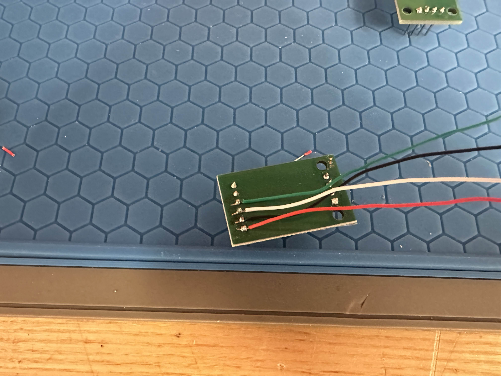
We initialized the loadcell using “hx=HX711(5,6)”, which uses pins 5 and 6 for communication, set the bit communication format with “hx.set_reading_format("MSB","MSB")”, the reference unit with “hx.set_reference_unit(1)”, then reset and tared the loadcell with hx.reset() and hx.tare(). The reference unit refers to the scalar value that the digital loadcell reading is multiplied by to convert into a force or mass. We found the reference unit by clamping the loadcell to a table and using calibration weights to our system. We found 500g of calibration weight returned an integer of 348700, which gave us a scaling value of 0.001433. We then provided the loadcell with 100g of calibration weight and received an integer value of approximately 69700, which converts to 99.94g using that same scaling value. This confirmed that our calibration value was accurate and consistent across the relevant range of the loadcell.
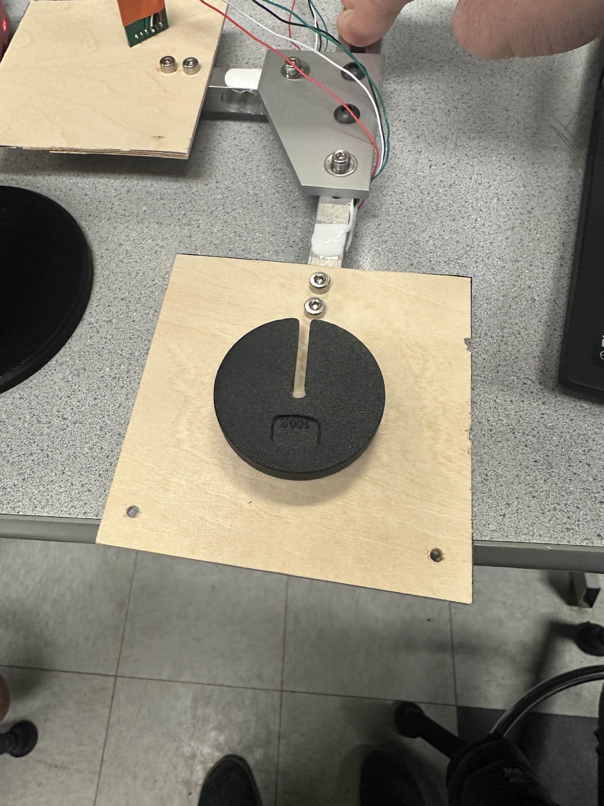
Our only issue with the loadcells was that our calibration value math would return a float, which was incompatible with our double-based logic (loadcell values were compared against weight in whole number grams). We addressed this issue by taking an array of readings, averaging the values, and converting them to a double.
Load Cell Communication, Calibration, and Readings
We initialized the loadcell using “hx=HX711(5,6)”, which uses pins 5 and 6 for communication, set the bit communication format with “hx.set_reading_format("MSB","MSB")”, the reference unit with “hx.set_reference_unit(1)”, then reset and tared the loadcell with hx.reset() and hx.tare(). The reference unit refers to the scalar value that the digital loadcell reading is multiplied by to convert into a force or mass. We found the reference unit by clamping the loadcell to a table and using calibration weights to our system. We found 500g of calibration weight returned an integer of 348700, which gave us a scaling value of 0.001433. We then provided the loadcell with 100g of calibration weight and received an integer value of approximately 69700, which converts to 99.94g using that same scaling value. This confirmed that our calibration value was accurate and consistent across the relevant range of the loadcell. Our only issue with the loadcells was that our calibration value math would return a float, which was incompatible with our double-based logic (loadcell values were compared against weight in whole number grams). We addressed this issue by taking an array of readings, averaging the values, and converting them to a double.
Motor Control
We wanted to use a peristaltic pump to dispense water because the pumps are cheap, readily available, and do not put pump parts in contact with the water. Note, you still shouldn’t drink the water because the tubing is not sterilized. We found a 6V pump on amazon and powered/controlled it in the same way as our previous robotics labs. We connected an H-bridge to the Pi using current limiting resistors on all communication pins, provided the H-bridge with voltage from a 6V battery which had a common ground with the Pi, and controlled the speed of the motor via PWM. We created a loop which would run the motor while the water dispenser loadcell was below a certain value, which would get the cup to the proper amount of water. Because of our previous experience with this exact system, we had no issues with motor control.
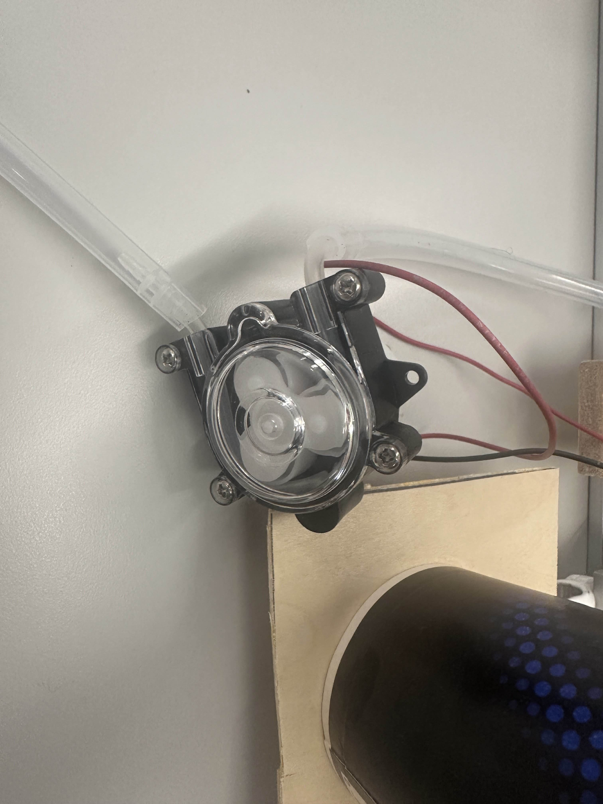
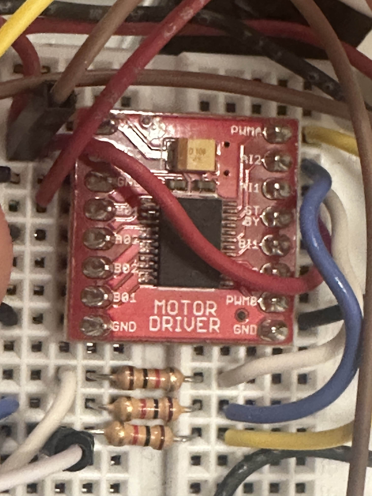
Buzzer Buzzing
We used a buzzer as an alarm that would alert the user when their pill had been dispensed. The buzzer was controlled via a GPIO pin that would be raised high to trigger the buzzer. While the setup worked for most of the project, we eventually had to switch the buzzer’s pin with the servo’s pin so that the servo could use a hardware PWM pin. At this point we encountered an issue where the pigpio library seemed to interfere with the GPIO library since the two libraries were being initialized at the same time. We attacked the issue by running the program in different configurations and with different pins until we eventually solved this issue by initializing the buzzer’s pin later in the program.
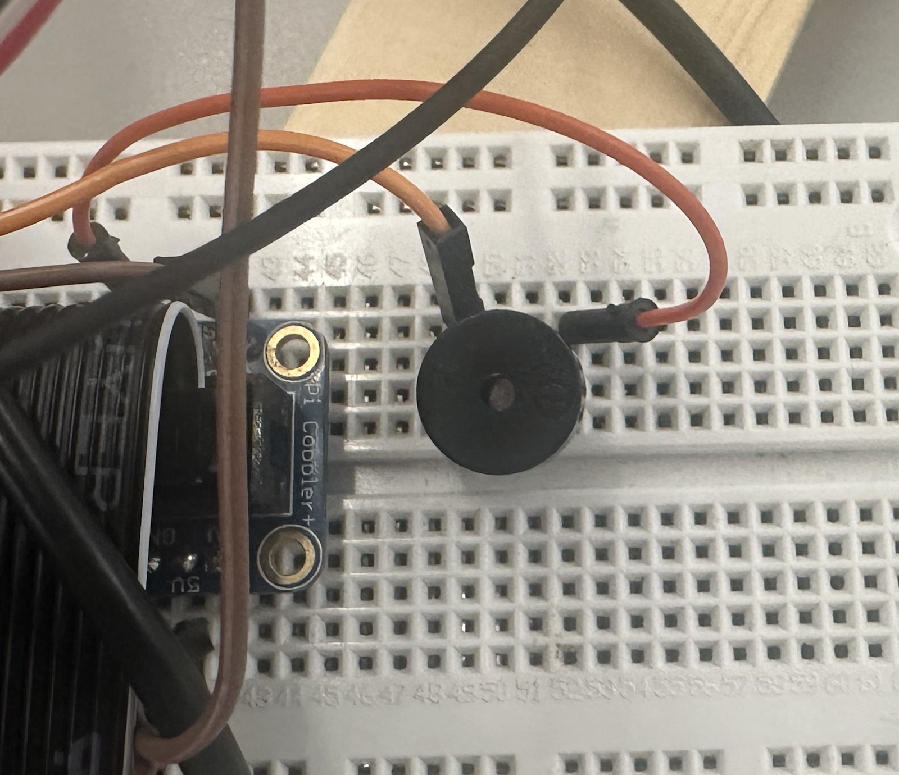
piTFT UI
We created a state machine that used booleans to determine the screen that the piTFT should display. The program starts by moving the pill dispenser to the start position, having the user fill the pill dispenser and water reservoir, and taring the loadcells. The user can click forwards and backwards through the menu using the capacitive touch screen. The user then sets a time for their next medicine dose. The user sets the time by incrementing or decrementing the time in hours and minutes. The main issue we had is that the pi does not have an internal clock, so its internal time is off by several days and hours. We could have addressed this issue by having the pi connect to a remote server with the correct time or by adding a battery powered clock to the breadboard to reset the Pi’s time on initialization. After setting the time, the user is prompted to wait or play a game. If they opt to play a game then the screen will display bouncing soccer balls until the dose is ready. When the dose is ready, the servo will dispense from the next pill container and the buzzer will sound until the user presses the “pill taken” button. From there, the user will decide whether or not to dispense water. If the user decides to dispense water, the screen will prompt them to add a cup. After a cup has been placed on the scale, the system will dispense water until the net weight in the cup has reached a target threshold. The screen will display a loading bar proportional to the fill-up progress. The pump will stop after the correct amount of water has been dispensed, and the user can wait until their next dose.
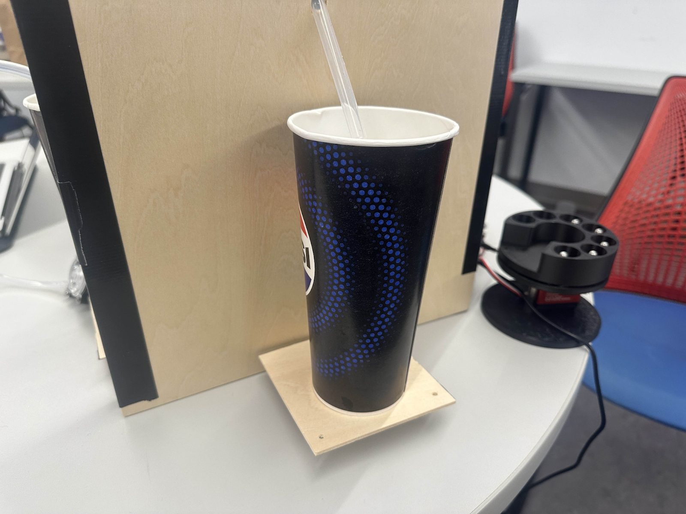
Results
Our project performs as intended. It is able to set the time at which the pills will be dispensed. Once it is set up, the dispenser is able to dispense the pill at the specified time with a set amount of water onto the cup for 7 days. In our case for the purposes of the demo and to be able to test it out, we set the time to be every minute (each minute represents a day) to make it easier for us to be able to see if Aquadose is able to perform as intended. We did meet our original goals and specifications. Dr. Ma suggested that we add some type of video or game for when the machine is at IDLE, which we embedded and it worked. Also, another suggestion that Dr. Ma suggested that we add a progress bar of how much water is being dispensed, and we added that in as well.
Conclusion
What Worked Well: What worked well was we first established a stable PiTFT interface, confirming its functionality before integrating additional subsystems. By adding each component incrementally, we were able to isolate issues efficiently and debug at the subsystem level rather than troubleshooting the entire system at once. This approach significantly reduced integration complexity and improved development speed.
What did Not Work as Expected, and Why: Due to time constraints, we were unable to refine the overall system structure and interface to the level of usability and aesthetic quality we initially planned. Most effort was directed toward achieving core functionality, which limited the time available for polishing the user experience and improving the organizational structure of the codebase.
Bill of Materials
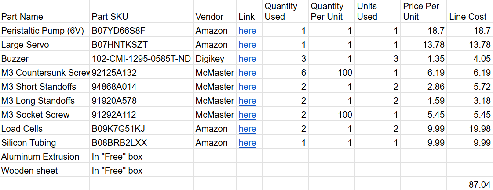
Contributions
Jennie Redrovan
Jennie focused on the core system architecture and overall software flow on the PiTFT platform. She implemented the buzzer functionality, integrated the load cell for the water container, and resolved critical debugging issues related to the load cell readings. In addition, Jennie structured the sequenced start-up logic to ensure that each subsystem could be tested and validated independently during development.
Robert Taylor
Rob led the mechanical design of the pill dispensing mechanism, creating the CAD model for the dispenser housing. On the software side, he implemented and tuned the motor/servo control for the pump and incorporated the load cell code into the main system. Rob worked closely on the integration between the mechanical dispenser and the electronic control logic to ensure consistent and reliable operation.
Future Work
In future iterations, we aim to design a proper mechanical structure to house the system. A custom enclosure will improve aesthetics, cable management, and user accessibility compared to the current prototype setup.
Resources
Code Appendix - servo_controller.py
1 2 3 4 5 6 7 8 9 10 11 12 13 14 15 16 17 18 19 20 21 22 23 24 25 26 27 28 29 30 31 32 33 34 35 36 37 38 39 |
import os #import RPi.GPIO as GPIO import pigpio import time import os #https://abyz.me.uk/rpi/pigpio/python.html#set_servo_pulsewidth #Servo PWM Pin pwm_pin = 19 pi1 = pigpio.pi() #Path path = "./servo_cmd" #current folder, named move_servo = True time_between_checking = 0.01 start_time = time.time() check_time = start_time pwm_list = [620,910,1150,1450,1730,2010,2290,2500] #0:620 1:910 2:1150 3: 1450 4: 1730 5: 2010 6: 2290 7: 2500 while(move_servo): if(time.time()-check_time>time_between_checking): with open(path,'r') as fifo: index_possible = fifo.read() if(index_possible=='stop'): os.remove(path) move_servo = False break if(index_possible.isdecimal()): index = int(index_possible) PWM_Signal = pwm_list[index] pi1.set_servo_pulsewidth(pwm_pin,PWM_Signal) pi1.set_servo_pulsewidth(pwm_pin,0) print("Ended cleanly") |
Code Appendix - piTFTComplete.sh
1 2 3 4 5 6 7 8 9 |
cd /home/pi/FinalProject # make fifo first if [ ! -p servo_cmd ]; then mkfifo servo_cmd fi #sudo pigpiod & python3 servo_controller.py & sudo python3 piTFT.py |
Code Appendix - piTFTComplete.py
1 2 3 4 5 6 7 8 9 10 11 12 13 14 15 16 17 18 19 20 21 22 23 24 25 26 27 28 29 30 31 32 33 34 35 36 37 38 39 40 41 42 43 44 45 46 47 48 49 50 51 52 53 54 55 56 57 58 59 60 61 62 63 64 65 66 67 68 69 70 71 72 73 74 75 76 77 78 79 80 81 82 83 84 85 86 87 88 89 90 91 92 93 94 95 96 97 98 99 100 101 102 103 104 105 106 107 108 109 110 111 112 113 114 115 116 117 118 119 120 121 122 123 124 125 126 127 128 129 130 131 132 133 134 135 136 137 138 139 140 141 142 143 144 145 146 147 148 149 150 151 152 153 154 155 156 157 158 159 160 161 162 163 164 165 166 167 168 169 170 171 172 173 174 175 176 177 178 179 180 181 182 183 184 185 186 187 188 189 190 191 192 193 194 195 196 197 198 199 200 201 202 203 204 205 206 207 208 209 210 211 212 213 214 215 216 217 218 219 220 221 222 223 224 225 226 227 228 229 230 231 232 233 234 235 236 237 238 239 240 241 242 243 244 245 246 247 248 249 250 251 252 253 254 255 256 257 258 259 260 261 262 263 264 265 266 267 268 269 270 271 272 273 274 275 276 277 278 279 280 281 282 283 284 285 286 287 288 289 290 291 292 293 294 295 296 297 298 299 300 301 302 303 304 305 306 307 308 309 310 311 312 313 314 315 316 317 318 319 320 321 322 323 324 325 326 327 328 329 330 331 332 333 334 335 336 337 338 339 340 341 342 343 344 345 346 347 348 349 350 351 352 353 354 355 356 357 358 359 360 361 362 363 364 365 366 367 368 369 370 371 372 373 374 375 376 377 378 379 380 381 382 383 384 385 386 387 388 389 390 391 392 393 394 395 396 397 398 399 400 401 402 403 404 405 406 407 408 409 410 411 412 413 414 415 416 417 418 419 420 421 422 423 424 425 426 427 428 429 430 431 432 433 434 435 436 437 438 439 440 441 442 443 444 445 446 447 448 449 450 451 452 453 454 455 456 457 458 459 460 461 462 463 464 465 466 467 468 469 470 471 472 473 474 475 476 477 478 479 480 481 482 483 484 485 486 487 488 489 490 491 492 493 494 495 496 497 498 499 500 501 502 503 504 505 506 507 508 509 510 511 512 513 514 515 516 517 518 519 520 521 522 523 524 525 526 527 528 529 530 531 532 533 534 535 536 537 538 539 540 541 542 543 544 545 546 547 548 549 550 551 552 553 554 555 556 557 558 559 560 561 562 563 564 565 566 567 568 569 570 571 572 573 574 575 576 577 578 579 580 581 582 583 584 585 586 587 588 589 590 591 592 593 594 595 596 597 598 599 600 601 602 603 604 605 606 607 608 609 610 611 612 613 614 615 616 617 618 619 620 621 622 623 624 625 626 627 628 629 630 631 632 633 634 635 636 637 638 639 640 641 642 643 644 645 646 647 648 649 650 651 652 653 654 655 656 657 658 659 660 661 662 663 664 665 666 667 668 669 670 671 672 673 674 675 676 677 678 679 680 681 682 683 684 685 686 687 688 689 690 691 692 693 694 695 696 697 698 699 700 701 702 703 704 705 706 707 708 709 710 711 712 713 714 715 716 717 718 719 720 721 722 723 724 725 726 727 728 729 730 731 732 733 734 735 736 737 738 739 740 741 742 743 744 745 746 747 748 749 750 751 752 753 754 755 756 757 758 759 760 761 762 763 764 765 766 767 768 769 770 771 772 773 774 775 776 777 778 779 780 781 782 783 784 785 786 787 788 789 790 791 792 793 794 795 796 797 798 799 800 801 802 803 804 805 806 807 808 809 810 811 812 813 814 815 816 817 818 819 820 821 822 823 824 825 826 827 828 829 830 831 832 833 834 835 836 837 838 839 840 841 842 843 844 845 846 847 848 849 850 851 852 853 854 855 856 857 858 859 860 861 862 863 864 865 866 867 868 869 870 871 872 873 874 875 876 877 878 879 880 881 882 883 884 885 886 887 888 889 890 891 892 893 894 895 896 897 898 899 900 901 902 903 904 905 906 907 908 909 910 911 912 913 914 915 916 917 918 919 920 921 922 923 924 925 926 927 928 929 930 931 932 933 934 935 936 937 938 939 940 941 942 943 944 945 946 947 948 949 950 951 952 953 954 955 956 957 958 959 960 961 962 963 964 965 966 967 968 |
#Code Written by Robert Taylor and Jennie Redrovan for final_project import pygame,pigame from pygame.locals import * import os import RPi.GPIO as GPIO import numpy as np from time import sleep from datetime import datetime, time, timedelta from hx711 import HX711 import time as pytime #loadcell functions (hx.tare, hx.reset, etc) code is from https://hughevans.dev/load-cell-raspberry-pi/, which itself is referencing the tatobari/hx711 library global hx, PUMP_PWM_PIN, PUMP_PWM_Pin_num, PUMP_AI1_Pin_num, PUMP_AI2_Pin_num #Setting up HX711 hx=HX711(5,6) hx.set_reading_format("MSB","MSB") hx.set_reference_unit(1/0.001433389) hx.reset() hx.tare() #Setting up HX711 #2 hx2=HX711(24,16) hx2.set_reading_format("MSB","MSB") hx2.set_reference_unit(-1/0.001433389) hx2.reset() hx2.tare() Buzzer=4 #GPIO GPIO.setmode(GPIO.BCM) GPIO.setup(17, GPIO.IN, pull_up_down=GPIO.PUD_UP) #hardware quit button GPIO.setup(Buzzer, GPIO.OUT) #BUZZER #Setting up pump motor PUMP_PWM_Pin_num = 13 PUMP_AI1_Pin_num = 12 PUMP_AI2_Pin_num = 20 GPIO.setup(PUMP_AI1_Pin_num,GPIO.OUT) GPIO.setup(PUMP_AI2_Pin_num,GPIO.OUT) GPIO.setup(PUMP_PWM_Pin_num,GPIO.OUT) PUMP_PWM_PIN = GPIO.PWM(PUMP_PWM_Pin_num,50) PUMP_PWM_PIN.start(0) def pump_forwards(duty): GPIO.output(PUMP_AI1_Pin_num,GPIO.HIGH) GPIO.output(PUMP_AI2_Pin_num,GPIO.LOW) PUMP_PWM_PIN.ChangeDutyCycle(duty) def pump_backwards(duty): GPIO.output(PUMP_AI1_Pin_num,GPIO.LOW) GPIO.output(PUMP_AI2_Pin_num,GPIO.HIGH) PUMP_PWM_PIN.ChangeDutyCycle(duty) def pump_off(): PUMP_PWM_PIN.ChangeDutyCycle(0) GPIO.output(PUMP_AI1_Pin_num, GPIO.LOW) GPIO.output(PUMP_AI2_Pin_num, GPIO.LOW) # PiTFT setup WHITE = (255,255,255) BLACK = (0,0,0) path = "./servo_cmd" def move_servo(index): with open(path,'w') as fifo: fifo.write(str(index)) def end_fifo(): with open(path,'w') as fifo: fifo.write('stop') try: os.mkfifo(path) print("FIFO named '%s' is created successfully." %path) except FileExistsError: print(f"servo pipe already exists at: {path}") except OSError as e: print(f"Error: {e}") os.putenv('SDL_VIDEODRIVER','fbcon') os.putenv('SDL_FBDEV', '/dev/fb0') os.putenv('SDL_MOUSEDRIVER','dummy') os.putenv('SDL_MOUSEDEV','/dev/null') os.putenv('DISPLAY','') pygame.init() pitft = pigame.PiTft() size = [320, 240] lcd = pygame.display.set_mode(size) width = 320 height = 240 lcd.fill(BLACK) #Making the screen black pygame.mouse.set_visible(False) #make mouse not visible #Defining Fonts font_big = pygame.font.Font(None, 30) font_step = pygame.font.Font(None, 24) #Defining Menu Buttons menu_buttons = {'Quit':(40,220), 'Start':(280,220)} #Defining Level 2 Buttons: Back and Next step_buttons = {'Back':(40,220), 'Next':(280,220)} #Defining Time Setting Buttons time_buttons = { "Hour+": (80, 120), "Hour-": (80, 160), "Min+": (240, 120), "Min-": (240, 160), } #Defining IDLE Buttons IDLE_buttons = {'Play a Game!':(width//2,145), 'Reset':(280,220)} #Defining Pill Alarm Button pill_alarm_buttons = {'Pill Taken': (width//2, 220)} #Defining Step Instructions Prompts as described in the project document steps_setup = [ "Place the 7 pills in\n the pill carousel.", "Place water\ncontainer in holder.", "We will now set the pill time", ] #set of instructions for each step below: COME BACK TO THIS LATER #"Pill time! Take your medication", #"Ensure cup is at the water dispenser", # "Add more water to the water container", #"Click 'Next' to return to the main menu.", screen = "MENU" setup_index = 0 code_run = True pill_hour = 8 # default 08:00 pill_min = 0 # default :00 next_dose_at = None # we will calculate this soon alarm_active = False # True only while pill alarm screen is showing counter=0 # True once pill is dispensed pill_dispensed=False water_dispensing_counter=True #Setting up Two-Ball Game set up game_buttons = { 'Pause': (40, 220), 'Fast': (120, 220), 'Slow': (200, 220), 'Back': (280, 220) } # ----- Two-ball game setup (run once) ----- ball = pygame.image.load('ball.png') ball = pygame.transform.scale(ball, (32, 32)) ball2 = ball speed1 = [2, 2] speed2 = [2, 5] ballrect = ball.get_rect() ballrect.x = 100 ballrect.y = 100 ballrect2 = ball2.get_rect() game_paused = False # Buttons for "Do you want water?" water_offer_buttons = { "No Water Today": (width//2 - 80, 200), "Yes, Water": (width//2 + 80, 200) } # Buttons for "Place cup" and "Add water" screens water_cup_buttons = { "No Water Today": (width//2 - 80, 200), "Check Again": (width//2 + 80, 200) } # Button for "Dispensing water" done screen water_done_buttons = { "Done": (width//2, 220), } #Helpful function to draw the menu #Helpful function to draw multi-line text def draw_multiline_text(text, y_start=40): """Draw multi-line instruction text centered horizontally.""" lines = text.split("\n") y = y_start for line in lines: surf = font_step.render(line, True, WHITE) rect = surf.get_rect(center=(width//2, y)) lcd.blit(surf, rect) y += 30 #Draws a button with given label at given center position def draw_button(label, center): surf = font_big.render(label, True, WHITE) rect = surf.get_rect(center=center) lcd.blit(surf, rect) #Checks if a point (x,y) is inside a button centered at 'center' with width w and height h def inside_button(x, y, center, w=100, h=50): cx, cy = center left = cx - w//2 right = cx + w//2 top = cy - h//2 bottom = cy + h//2 return (left <= x <= right) and (top <= y <= bottom) #Checking Loadcells def avg_weight(loadcell, samples=5): vals = [] for _ in range(samples): w = loadcell.get_weight(1) vals.append(w) sleep(0.01) return sum(vals)/len(vals) if vals else 0.0 def read_sensors(): cup_weight = avg_weight(hx) # cup under dispenser water_weight = avg_weight(hx2) # reservoir print(f"DEBUG cup_weight={cup_weight:.1f}, water_weight={water_weight:.1f}") CUP_PRESENT_THRESHOLD = 80 # e.g. weight with cup but no water ENOUGH_WATER_THRESHOLD = 200 # e.g. min reservoir weight cup_present = cup_weight > CUP_PRESENT_THRESHOLD enough_water = water_weight > ENOUGH_WATER_THRESHOLD if not cup_present: screen = "NO_CUP" elif not enough_water: screen = "LOW_WATER" else: screen = "DISPENSE_WATER" return cup_present, enough_water, screen #BUZZER #https://www.instructables.com/Raspberry-Pi-Tutorial-How-to-Use-a-Buzzer/ #look at this later^^ #TO-DO later def start_buzzer(): GPIO.setmode(GPIO.BCM) GPIO.setup(Buzzer, GPIO.OUT) GPIO.output(Buzzer, GPIO.HIGH) print("Beep") def stop_buzzer(): try: GPIO.output(Buzzer, GPIO.LOW) except RuntimeError: pass # CHECK SENSORS FUNCTION move_servo(0) while code_run and GPIO.input(17): lcd.fill(BLACK) print(counter) # Check the current time once per loop now = datetime.now() #print("DEBUG now:", now, "next_dose_at:", next_dose_at) if next_dose_at is not None and not alarm_active and now >= next_dose_at and not pill_dispensed: screen = "PILL_ALARM" alarm_active = True #move_servo(counter+1) print("DEBUG now:", now, "next_dose_at:", next_dose_at) #TO-do later: start buzzer and dispense pill motor here start_buzzer() print("for some reason I am here need to counter it :(") if counter ==7 and screen == "IDLE_SCREEN": print("counter:", counter) lcd.fill(BLACK) title = font_big.render("All pills dispensed!", True, WHITE) rect = title.get_rect(center=(width//2, height//2)) lcd.blit(title, rect) lcd.fill(BLACK) title2 = font_big.render("Time for Refill!", True, WHITE) rect2 = title.get_rect(center=(width//2, height//2)) lcd.blit(title2, rect2) pitft.update() pygame.display.flip() screen ="MENU" setup_index = 0 pill_hour = 8 # reset default 08:00 pill_min = 0 # reset default :00 next_dose_at = None # reset alarm_active = False # reset counter=0 # reset if screen == "MENU": title=font_big.render("AquaDose", True, WHITE) rect=title.get_rect(center=(width//2, height//2)) lcd.blit(title, rect) for label, center in menu_buttons.items(): draw_button(label, center) pitft.update() pygame.display.flip() # Scan touchscreen events for event in pygame.event.get(): if(event.type is MOUSEBUTTONUP): x,y = pygame.mouse.get_pos() if inside_button(x, y, menu_buttons['Quit']): code_run = False elif inside_button(x, y, menu_buttons['Start']): screen = "SETUP" setup_index = 0 elif screen == "SETUP": lcd.fill(BLACK) #Display current setup step instructions draw_multiline_text(steps_setup[setup_index], y_start=60) if setup_index ==2: # If we are on the time setting step # Draw time setting buttons time_text = f"Set Pill Time: {pill_hour:02d}:{pill_min:02d}" time_surf = font_step.render(time_text, True, WHITE) time_rect = time_surf.get_rect(center=(width//2, 80)) lcd.blit(time_surf, time_rect) # Draw time adjustment buttons for label, center in time_buttons.items(): draw_button(label, center) # Draw Back and Next buttons for label, center in step_buttons.items(): draw_button(label, center) pitft.update() pygame.display.flip() # Scan touchscreen events for event in pygame.event.get(): if(event.type is MOUSEBUTTONUP): x,y = pygame.mouse.get_pos() print(x,y) if setup_index == 2: # If we are on the time setting step #TIME SETTING BUTTON FUNCTIONALITY if inside_button(x, y, time_buttons["Hour+"]): pill_hour = (pill_hour + 1) % 24 # Increment hour, wrap around at 24 elif inside_button(x, y, time_buttons["Hour-"]): pill_hour = (pill_hour - 1) % 24 # Decrement hour, wrap around at 0 elif inside_button(x, y, time_buttons["Min+"]): pill_min = (pill_min + 1) % 60 # Increment minute, wrap around at 60 elif inside_button(x, y, time_buttons["Min-"]): pill_min = (pill_min - 1) % 60 # Decrement minute, wrap around at 0 #BACK BUTTON FUNCTIONALITY: IF BACK BUTTON PRESSED, GO TO PREVIOUS STEP OR MENU if inside_button(x, y, step_buttons['Back']): if setup_index > 0: setup_index -= 1 else: screen = "MENU" #NEXT BUTTON FUNCTIONALITY: IF NEXT BUTTON PRESSED, GO TO NEXT STEP OR MENU elif inside_button(x, y, step_buttons['Next']): if setup_index < len(steps_setup) - 1: setup_index += 1 else: now=datetime.now() choosen_dose_time =time(pill_hour, pill_min) dose_today = datetime.combine(now.date(), choosen_dose_time) if dose_today > now: next_dose_at = dose_today else: #next_dose_at = dose_today + timedelta(days=1) next_dose_at = datetime.now() + timedelta(minutes=1) print("DEBUG next_dose_at TEST:", next_dose_at) screen = "IDLE_SCREEN" screen = "IDLE_SCREEN" elif screen == "IDLE_SCREEN": lcd.fill(BLACK) #Draws the Title title=font_big.render("AquaDose", True, WHITE) rect=title.get_rect(center=(width//2, 80)) lcd.blit(title, rect) #Draws the "Next Dose At:" label = font_step.render("Next Dose At:", True, WHITE) label_rect = label.get_rect(center=(width//2, 100)) lcd.blit(label, label_rect) # Time text in 24-hour format and draws it time_text = next_dose_at.strftime("%H:%M") time_surf = font_big.render(time_text, True, WHITE) time_rect = time_surf.get_rect(center=(width//2, 120)) lcd.blit(time_surf, time_rect) #Draws the IDlE buttons for label, center in IDLE_buttons.items(): draw_button(label, center) pitft.update() pygame.display.flip() for event in pygame.event.get(): if(event.type is MOUSEBUTTONUP): x,y = pygame.mouse.get_pos() if inside_button(x, y, IDLE_buttons['Reset']): screen = "MENU" setup_index = 0 pill_hour = 8 # reset default 08:00 pill_min = 0 # reset default :00 next_dose_at = None # reset alarm_active = False # reset counter=0 # reset elif inside_button(x, y, IDLE_buttons['Play a Game!']): #Ball Speeds speed1 = [2,2] speed2 = [5,5] ballrect = ball.get_rect() ballrect.x = 100 ballrect.y = 100 ballrect2 = ball2.get_rect() game_paused = False screen = "GAME" elif screen == "GAME": lcd.fill(BLACK) lcd.blit(ball,ballrect) lcd.blit(ball2,ballrect2) if not game_paused: ballrect = ballrect.move(speed1) ballrect2 = ballrect2.move(speed2) if ballrect.left < 0 or ballrect.right > width: speed1[0] = -speed1[0] if ballrect.top < 0 or ballrect.bottom > height: speed1[1] = -speed1[1] if ballrect2.left < 0 or ballrect2.right > width: speed2[0] = -speed2[0] if ballrect2.top < 0 or ballrect2.bottom > height: speed2[1] = -speed2[1] if pygame.Rect.colliderect(ballrect2, ballrect): speed2[1] = -speed2[1] speed1[1] = -speed1[1] speed2[0] = -speed2[0] speed1[0] = -speed1[0] for k,v in game_buttons.items(): text_surface = font_big.render('%s'%k, True, WHITE) rect = text_surface.get_rect(center=v) lcd.blit(text_surface, rect) pitft.update() pygame.display.flip() # Scan touchscreen events for event in pygame.event.get(): if(event.type is MOUSEBUTTONDOWN): x,y = pygame.mouse.get_pos() print(x,y) elif(event.type is MOUSEBUTTONUP): x,y = pygame.mouse.get_pos() #Find which quarter of the screen we're in pygame.display.flip() if y > 200: if x < 80: game_paused = not game_paused elif 80<x and x<160: speed2 = speed2+1*speed2/(np.linalg.norm(speed2)) speed1 = speed1+1*speed1/(np.linalg.norm(speed1)) elif 160<x and x<240: speed2 = speed2-1*speed2/(np.linalg.norm(speed2)) speed1 = speed1-1*speed1/(np.linalg.norm(speed1)) elif x>240: screen = "IDLE_SCREEN" elif screen == "PILL_ALARM": lcd.fill(BLACK) print("DEBUG: entering PILL_ALARM") # Draws time take pill title = font_big.render("Time to take your pill!", True, WHITE) rect = title.get_rect(center=(width//2, 80)) lcd.blit(title, rect) move_servo(counter+1) #Draws that pill has been dispensed. msg = font_step.render("Pill has been dispensed.", True, WHITE) msg_rect = msg.get_rect(center=(width//2, 120)) lcd.blit(msg, msg_rect) # Draw the "Pill Taken" button for label, center in pill_alarm_buttons.items(): draw_button(label, center) #print("DEBUG: I AM HERE in the button stuff draw") # Scan touchscreen events pitft.update() pygame.display.flip() for event in pygame.event.get(): if(event.type is MOUSEBUTTONUP): x,y = pygame.mouse.get_pos() if inside_button(x, y, pill_alarm_buttons['Pill Taken']): #print("DEBUG: I AM HERE pill taken") #User Confirms they took the pill alarm_active = False pill_dispensed=True counter+=1 # TO-do later: stop buzzer here stop_buzzer() #print("DEBUG next_dose_at just set to:", next_dose_at) # Go back to idle screen to wait for the next dose screen = "WATER_OFFER" elif screen == "WATER_OFFER": lcd.fill(BLACK) title = font_big.render("Would you like water?", True, WHITE) rect = title.get_rect(center=(width//2, 80)) lcd.blit(title, rect) msg = font_step.render("You can skip water for today.", True, WHITE) msg_rect = msg.get_rect(center=(width//2, 120)) lcd.blit(msg, msg_rect) # Draw the two buttons for label, center in water_offer_buttons.items(): draw_button(label, center) print("DEBUG: I AM HERE WATERRRR") pitft.update() pygame.display.flip() for event in pygame.event.get(): if(event.type is MOUSEBUTTONUP): x,y = pygame.mouse.get_pos() if inside_button(x, y, water_offer_buttons['No Water Today']): # Schedule the next day's dose at the same time next_dose_at = next_dose_at + timedelta(minutes=1) pill_dispensed=False # Go back to idle screen to wait for the next dose screen = "IDLE_SCREEN" elif inside_button(x, y, water_offer_buttons["Yes, Water"]): #screen = "NO_CUP" #testing purposes cup_present, enough_water, screen = read_sensors() elif screen == "NO_CUP": lcd.fill(BLACK) title = font_big.render("Place Cup under?", True, WHITE) rect = title.get_rect(center=(width//2, 80)) lcd.blit(title, rect) msg = font_step.render("water Dispenser", True, WHITE) msg_rect = msg.get_rect(center=(width//2, 120)) lcd.blit(msg, msg_rect) # Draw the two buttons for label, center in water_cup_buttons.items(): draw_button(label, center) pitft.update() pygame.display.flip() print("NO CUP") for event in pygame.event.get(): if(event.type is MOUSEBUTTONUP): x,y = pygame.mouse.get_pos() if inside_button(x, y, water_cup_buttons['No Water Today']): # Schedule the next day's dose at the same time next_dose_at = next_dose_at + timedelta(minutes=1) pill_dispensed=False # Go back to idle screen to wait for the next dose screen = "IDLE_SCREEN" elif inside_button(x, y, water_cup_buttons["Check Again"]): print("I AM HERE IN THE CHECK AGAIN NO CUP") #screen = "LOW_WATER" #testing purposes cup_present, enough_water, screen = read_sensors() elif screen == "LOW_WATER": print("LOW WATER") lcd.fill(BLACK) title = font_big.render("Please add more water", True, WHITE) rect = title.get_rect(center=(width//2, 80)) lcd.blit(title, rect) msg = font_step.render("Fill the container:", True, WHITE) msg_rect = msg.get_rect(center=(width//2, 120)) lcd.blit(msg, msg_rect) # Draw the two buttons for label, center in water_cup_buttons.items(): draw_button(label, center) pitft.update() pygame.display.flip() for event in pygame.event.get(): if(event.type is MOUSEBUTTONUP): x,y = pygame.mouse.get_pos() if inside_button(x, y, water_cup_buttons['No Water Today']): # Schedule the next day's dose at the same time next_dose_at = next_dose_at + timedelta(minutes=1) pill_dispensed=False # Go back to idle screen to wait for the next dose screen = "IDLE_SCREEN" elif inside_button(x, y, water_cup_buttons["Check Again"]): #screen = "DISPENSE_WATER" #testing purposes print("DEBUG CHECK AGAIN") cup_present, enough_water, screen = read_sensors() elif screen == "DISPENSE_WATER": lcd.fill(BLACK) title = font_big.render("Dispensing Water...", True, WHITE) rect = title.get_rect(center=(width//2, 80)) lcd.blit(title, rect) msg = font_step.render("Enjoy your drink!", True, WHITE) msg_rect = msg.get_rect(center=(width//2, 120)) lcd.blit(msg, msg_rect) #TO-DO later: actually run pump motor here # --- pump until cup gains some weight (cup sensor only) --- start_w = avg_weight(hx) target_delta = 120 # how much water to add (tune this) max_time = 6.0 # safety timeout # Progress bar layout bar_width = 200 bar_height = 20 bar_x = width//2 - bar_width//2 bar_y = 160 t0 = pytime.time() current_w = start_w if water_dispensing_counter: while (current_w - start_w) < target_delta and (pytime.time()- t0) < max_time and GPIO.input(17): pump_forwards(80) sleep(0.05) current_w = avg_weight(hx) # Draw progress bar (full since we just finished) # --- compute progress from 0 to 1 --- delta = current_w - start_w progress = delta / target_delta if target_delta > 0 else 0 # clamp to [0,1] if progress < 0: progress = 0 elif progress > 1: progress = 1 # redraw screen each loop lcd.fill(BLACK) title = font_big.render("Dispensing Water...", True, WHITE) rect = title.get_rect(center=(width//2, 80)) lcd.blit(title, rect) msg = font_step.render("Enjoy your drink!", True, WHITE) msg_rect = msg.get_rect(center=(width//2, 120)) lcd.blit(msg, msg_rect) # draw progress bar outline pygame.draw.rect(lcd, WHITE, (bar_x, bar_y, bar_width, bar_height), 2) # draw filled portion filled_width = int(bar_width * progress) if filled_width > 0: pygame.draw.rect( lcd, WHITE, (bar_x + 2, bar_y + 2, filled_width - 4, bar_height - 4) ) # optional: show percentage text pct_text = font_step.render(f"{int(progress*100)}%", True, WHITE) pct_rect = pct_text.get_rect(center=(width//2, bar_y - 20)) lcd.blit(pct_text, pct_rect) pitft.update() pygame.display.flip() pump_off() water_dispensing_counter=False # Draw the two buttons for label, center in water_done_buttons.items(): draw_button(label, center) pitft.update() pygame.display.flip() print("DEBUG Dispensing Water") for event in pygame.event.get(): if(event.type is MOUSEBUTTONUP): x,y = pygame.mouse.get_pos() if inside_button(x, y, water_done_buttons['Done']): next_dose_at = next_dose_at + timedelta(minutes=1) pill_dispensed=False water_dispensing_counter=True print("DEBUG next_dose_at (after water):", next_dose_at) screen = "IDLE_SCREEN" sleep(0.1) pygame.quit() end_fifo() PUMP_PWM_PIN.start(0) GPIO.cleanup() print("Quit") del(pitft) |